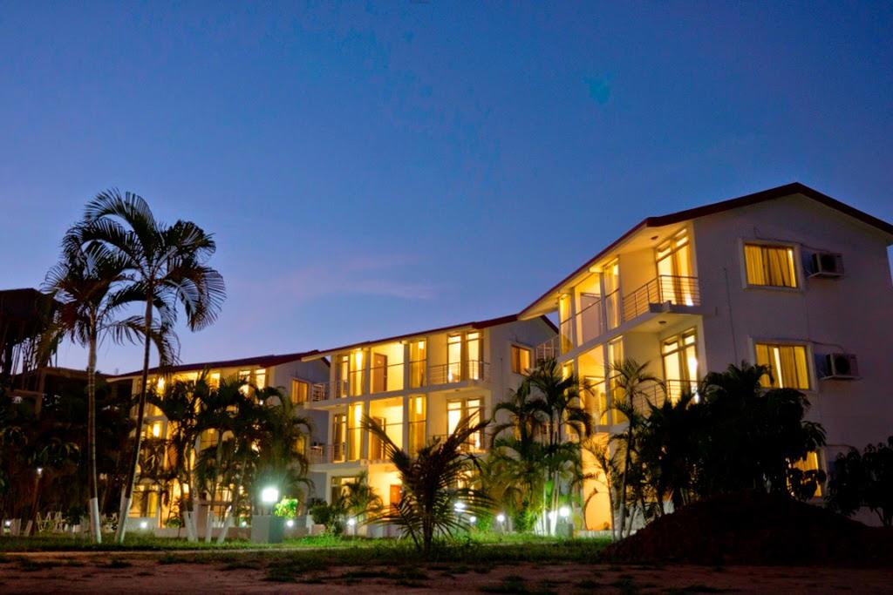
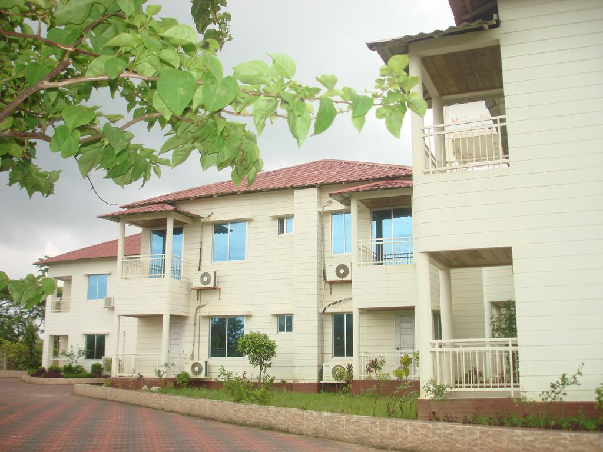

Uni Resort
This property is a 15-minute walk from the beach. Featuring free WiFi and a restaurant, Uni Resort offers accommodations in Cox's Bazar. Guests can enjoy the on-site restaurant.
Some rooms have a sitting area for your convenience. Each room is fitted with a private bathroom. For your comfort, you will find slippers and free toiletries. A flat-screen TV is available.
You will find a shops at the property.
The hotel also provides car rental.
This property also has one of the top-rated locations in Cox's Bazar! Guests are happier about it compared to other properties in the area.
This property is also rated for the best value in Cox's Bazar! Guests are getting more for their money when compared to other properties in this city.

Inani Royal Resort
This property is a 6-minute walk from the beach. Showcasing a playground and views of the sea, Inani Royal Resort is located in Ināni. Guests can enjoy the on-site restaurant. Free WiFi is provided and free private parking is available on site.
Every room at this resort is air conditioned and features a flat-screen TV. Certain accommodations include a sitting area for your convenience. Each room is fitted with a private bathroom. For your comfort, you will find slippers and free toiletries.
There is a 24-hour front desk at the property.
The resort also provides bike rental.
This property also has one of the top-rated locations in Ināni! Guests are happier about it compared to other properties in the area.
This property is also rated for the best value in Ināni! Guests are getting more for their money when compared to other properties in this city.

Sea Welcome Resort
This property is a 10-minute walk from the beach. Featuring free WiFi, Sea Welcome Resort offers accommodations in Cox's Bazar. Free private parking is available on site.
Every room is fitted with a TV. Some rooms include a sitting area for your convenience. The rooms are equipped with a private bathroom equipped with a shower. For your comfort, you will find slippers and free toiletries.
There is a 24-hour front desk, concierge services and a shops at the property.
The resort also provides car rental.

La Bella Resort
La Bella Resort Cox's Bazar offers accommodations in Ināni. Free private parking is available on site.
Every room is equipped with a flat-screen TV. Some units feature a sitting area for your convenience. Certain rooms have views of the sea or garden. Each room has a private bathroom equipped with a shower. For your comfort, you will find slippers and free toiletries.
There is a 24-hour front desk at the property.
The resort also provides car rental.
Inani Pebble Beach Resort
Inani Pebble Beach Resort offers accommodations in Ināni. Guests can enjoy the on-site restaurant. Free WiFi is available throughout the property and free private parking is available on site.
Each room comes with a flat-screen TV with cable channels. Certain rooms include views of the sea or garden. Each room is equipped with a private bathroom fitted with a bathtub. For your comfort, you will find slippers and free toiletries.
You will find a 24-hour front desk at the property.
The resort also provides car rental.